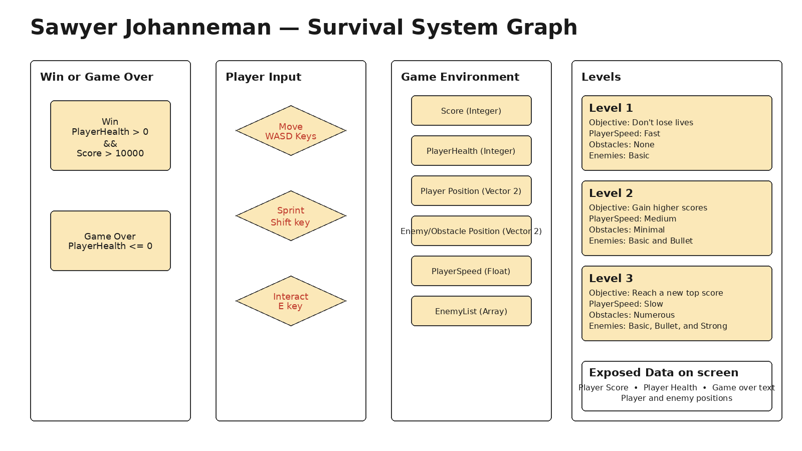

Survival
A 2D top-down evasion game by Sawyer Johanneman. Run from enemies, dodge obstacles, and manage a limited energy reserve — all while the screen gets harder the longer you last.
▶ Play the GameConcept
Survival is about fast action and a quiet resource balance: energy. The real challenge isn't speed, it's reading the landscape — gaps between obstacles, enemy angles, and how much sprint you can still afford.
The game is built with plain HTML, CSS, and JavaScript on an HTML5 Canvas. No libraries, no build step, and no internet connection are required for exhibition.
Player Goal
Survive long enough to reach a score of 1000 while keeping your health above zero. The longer you last, the more enemies appear, the more obstacles block your path, and the slower your base running speed becomes — so you must rely on smart movement and energy management rather than raw speed. Obstacles come in distinct types (crate, rock, hazard, barrier, crystal), and enemies knock you back on contact, so standing still is never safe.
Core Learning Shift
Beginners think safety is a location on the map: they find a corner and stay there. Experts understand that safety is dynamic: it comes from constantly judging spaces, predicting enemy movement, and using energy at the right moments.
This game makes that shift playable by forcing the player to keep moving, reroute around obstacles, and decide when to sprint or use the interact ability.
Controls
| Action | Key | Cost / Note |
|---|---|---|
| Move | W A S D | Hold one direction to build momentum (higher speed) |
| Sprint | SHIFT | Drains energy; cannot sprint at 0 energy |
| Jump | SPACE | Hop toward/away from the screen to sail over enemies and obstacles |
| Push | E | Costs energy; pushes nearby obstacles and knocks enemies away |
| Start / Restart | SPACE | From start, win, or game-over screen |
Domain Knowledge & System Design
Real-World Domain: Running
Running at speed is not just about moving quickly. It is about reading the terrain ahead, judging whether you can fit through a gap, deciding when to burn extra energy, and reacting to sudden changes. In a chase, the runner who freezes or clings to one spot is usually caught.
Novice Misconception
Beginners believe that staying in one safe spot will keep them safe. In the game this is punished because enemies keep spawning and obstacles eventually fill the map, so standing still leads to being surrounded.
Expert Judgment
Experts keep scanning the environment, plan routes through obstacles, and use bursts of speed only when needed. They treat safety as a process of continuous adjustment rather than a single place.
System Graph

The system graph shows win/game-over conditions, player inputs, environment data, level presets, and exposed on-screen feedback.
Data Model
Environment Data
- Obstacle locations — rectangles that block movement and reduce health on contact.
- Enemy positions and types — basic chasers, fast bullets, and strong tanks.
- Player position — current x, y location on the canvas.
- Energy remaining — resource shared with sprint and interact.
Player-Controlled Data
- Movement — W, A, S, D direction.
- Sprint — Shift increases speed at energy cost.
- Interact — E pushes obstacles and knocks enemies away.
System-Calculated Results
- Level — derived from current score.
- Player speed — base speed set by level plus sprint multiplier.
- Enemy spawn rates and types — increase with level.
- Score — grows over time and faster at higher levels.
Feedback Translation
- Score — top-left number showing progress toward 1000.
- Health / lives — top-right bar showing how close you are to losing.
- Energy — bar below score showing remaining sprint/interact resource.
- Level and objective — center-top text telling you the current challenge.
- Visual feedback — red flash on damage, shockwave on interact, sprint aura.
Rules, Boundaries, and Outcomes
- Win: score reaches 10,000 with health still above 0.
- Lose: health drops to 0 or below from enemy or obstacle contact.
- Energy: sprint and interact drain the same energy pool; energy regenerates slowly when not sprinting.
- Just-right range: the player must move at a rhythm that avoids enemies without running out of energy or cornering themselves.
Challenge Presets
| Level | Objective | Player Speed | Obstacles | Enemies |
|---|---|---|---|---|
| Level 1 | Don't lose lives | Fast | None | Basic |
| Level 2 | Gain higher scores | Medium | Minimal | Basic + Bullet |
| Level 3 | Reach a new top score | Slow | Numerous | Basic + Bullet + Strong |
Development Process
A chronological timeline of how Survival was built. This page is kept in sync with agent-development-log.md.
Milestone 1 — Project Setup
- Created
source/andexhibition/folders. - Built the game with plain HTML5 Canvas + vanilla JavaScript (no third-party library).
- Wrote
README.md,THIRD_PARTY.md,submission-manifest.json, andagent-development-log.md. - Generated a clean
system-graph.pngfrom the provided system graph image.
Milestone 2 — First Playable Loop
- Player moves with WASD; speed and energy are visible.
- Basic enemies spawn and chase the player.
- Health decreases on contact; red flash gives immediate feedback.
- Score increases over time, shown top-left.
- Game-over and win screens allow restart.
Milestone 3 — Challenge Presets
- Level thresholds tied to score: 0–199; 200–349; 350+ (win at 1000).
- Each level changes player base speed, obstacle count, enemy spawn rates, and enemy types.
- Added bullet enemies (fast straight-line movers) and strong enemies (slow, high damage).
- Added interact ability (E key) that pushes obstacles and knocks enemies away.
Milestone 4 — Website Integration
- Built a single-page site with Game Idea, Domain & System, Process, and Play Game sections.
- Used in-page navigation so the preview webview always serves the same entry file.
- Used relative paths so the project works inside a Gallery subfolder.
Milestone 5 — Exhibition Test & Packaging
- Copied verified source files into
exhibition/. - Tested with a local static HTTP server and confirmed all assets load.
- Generated
preview.pngand the final ZIP archive.
Student Reflection
Does the current game still help the player experience the intended domain-learning shift? What became stronger, weaker, or different? Which AI suggestion did you accept, reject, or change, and why?
I accepted the suggestions that I felt would lead to a better platform, and rejected ideas that could change the game in a negative way, although most ideas within the game were my own. The current game helps the player experience the intended domain learning shift through reaction time training and speed control, although it could be stronger in the future.
Play Survival
Reach a score of 1000 while keeping your health above zero. The levels get harder and your available space shrinks.